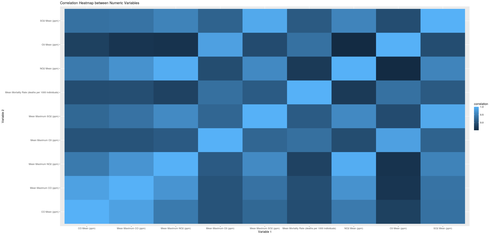
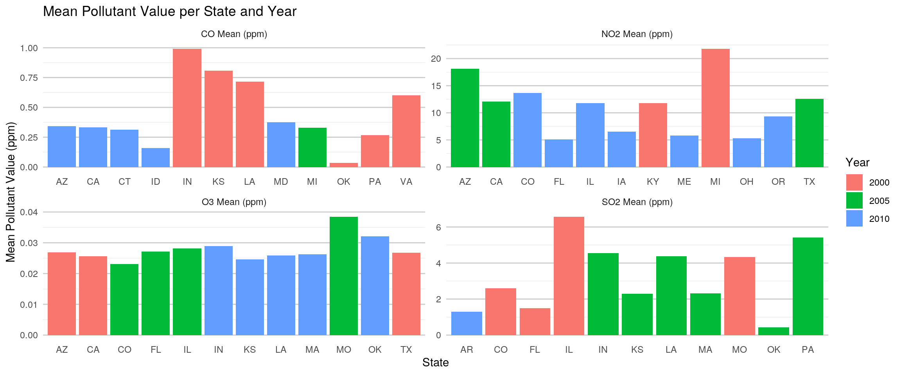
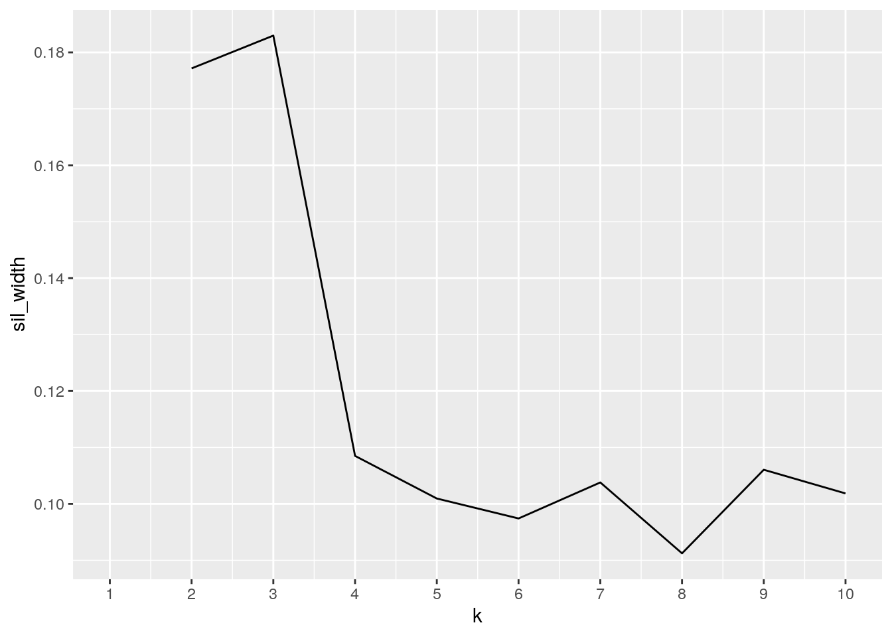

January 1, 0001
Introduction
For my project I have chosen to explore the relationship between the air quality in locations around the United States and the mortality rate of chronic respiratory diseases. One of the datasets I will be using includes information from different states about their air pollution indexes, including nitrogen dioxide (NO2), ozone (O3), sulphur dioxide (SO2), and carbon monoxide (CO). The other dataset I will be using includes information of the mortality rates due to chronic respiratory diseases across counties in different states. I intend to utilize these two datasets to determine if I can find a relationship between the quality of air in these states and the mortality rate due to chronic respiratory diseases. I found the air quality dataset by searching for US pollution data on kaggle.com and found the mortality dataset by searching for mortality rates due to respiratory diseases on Google and finding it on ghdx.healthdata.org. The air quality index gives day to day statistics for the different air quality measures (daily mean, maximum for the 1st hour, and daily max) for the different pollutants mentioned earlier from 2000 to 2016. The mortality dataset gives the mortality rate for chronic respiratory diseases for different counties in the United States every 5 years from 1985 to 2014. I plan to limit the observation to those only from 2000 ,2005, 2010, and 2014 because these are the most recent years that are in both datasets, and I intend to focus only yearly trends from removing the daily information from the air quality dataset. I chose to explore the relationship between these variables because I have wondered how much an effect breathing polluted air can have on our health, and why we should be pushing for cleaner air regulations in the country. Hopefully after analyzing these two datasets, I will see that states with higher amounts of air pollutants have higher mortality rates related to chronic respiratory diseases.
Tidying Before Joining Datasets
library(tidyverse)
library(readxl)
IHME_USA_COUNTY_RESP_DISEASE_MORTALITY_1980_2014_NATIONAL_Y2017M09D26 <- read_excel("IHME_USA_COUNTY_RESP_DISEASE_MORTALITY_1980_2014_NATIONAL_Y2017M09D26.XLSX")
library(readr)
uspollution_pollution_us_2000_2016 <- read_csv("uspollution_pollution_us_2000_2016.csv")
# uspollution_pollution_us_2000_2016 is the air quality
# dataset
# IHME_USA_COUNTY_RESP_DISEASE_MORTALITY_1980_2014_NATIONAL_Y2017M09D26
# is the mortality dataset
ProjectDF1 <- uspollution_pollution_us_2000_2016 %>% separate(`Date Local`,
into = c("i", "Year"), sep = 4) %>% mutate(Year = str_replace(Year,
"00", "2000"), Year = str_replace(Year, "05", "2005"), Year = str_replace(Year,
"10", "2010"), Year = str_replace(Year, "14", "2014")) %>%
filter(Year == c(2000, 2005, 2010, 2014)) %>% unite(State,
Year, col = "Unique", sep = ".", remove = F) %>% group_by(Unique,
State, Year) %>% summarize(`NO2 Mean (ppm)` = mean(`NO2 Mean`),
`Mean Maximum NO2 (ppm)` = mean(`NO2 1st Max Value`), `O3 Mean (ppm)` = mean(`O3 Mean`),
`Mean Maximum O3 (ppm)` = mean(`O3 1st Max Value`), `SO2 Mean (ppm)` = mean(`SO2 Mean`),
`Mean Maximum SO2 (ppm)` = mean(`SO2 1st Max Value`), `CO Mean (ppm)` = mean(`CO Mean`),
`Mean Maximum CO (ppm)` = mean(`CO 1st Max Value`))
ProjectDF2 <- IHME_USA_COUNTY_RESP_DISEASE_MORTALITY_1980_2014_NATIONAL_Y2017M09D26 %>%
separate(Location, into = c("p", "Location"), sep = ", ") %>%
pivot_longer(contains(", ")) %>% separate(name, into = c("i",
"Year"), sep = ", ") %>% separate(value, into = c("Mortality Rate (deaths per 1000 individuals)",
"j"), sep = " ") %>% separate(Year, into = c("Year", "h"),
sep = "\\*") %>% filter(Location != "United States", i !=
"% Change in Mortality Rate") %>% select(Location, Year,
`Mortality Rate (deaths per 1000 individuals)`) %>% filter(Year ==
c("2000", "2005", "2010", "2014")) %>% unite(Location, Year,
col = "Unique", sep = ".") %>% mutate(`Mortality Rate (deaths per 1000 individuals)` = as.numeric(`Mortality Rate (deaths per 1000 individuals)`)) %>%
group_by(Unique) %>% summarize(`Mean Mortality Rate (deaths per 1000 individuals)` = mean(`Mortality Rate (deaths per 1000 individuals)`)) %>%
separate(Unique, into = c("State", "Year"), remove = F)I started off by creating the common variable between the two datasets, which I decided should be the state and year, since this will cause each row to have its own unique variable. Next, I got rid of information in the dataset that I would not be using for my analysis and made the dataset easier to read with less clutter.
Joint Set
joinset <- full_join(ProjectDF1, ProjectDF2, by = c("Unique",
"State", "Year")) %>% na.omit() %>% ungroup()I decided to do a full join because each of my data sets exclusively contained data that I want to utilize in my analysis, so I did not want to lose any information from either of the datasets. The tidy air pollution dataset originally had 110 observations and the tidy mortality dataset originally had 204 observations. After doing a full join on both datasets and after dropping the NAs, 144 observations were lost because there were observations in the air pollution dataset that did not have a corresponding observation in the mortality dataset and vice versa.
Using dplyr Functions
# Mean Air Pollutants for each Year
joinset %>% filter(Year == "2000") %>% group_by(Year) %>% summarize(`Mean NO2` = mean(`NO2 Mean (ppm)`),
`Mean O3` = mean(`O3 Mean (ppm)`), `Mean SO2` = mean(`SO2 Mean (ppm)`),
`Mean CO` = mean(`CO Mean (ppm)`))## # A tibble: 1 x 5
## Year `Mean NO2` `Mean O3` `Mean SO2` `Mean CO`
## <chr> <dbl> <dbl> <dbl> <dbl>
## 1 2000 15.9 0.0283 3.83 0.529joinset %>% filter(Year == "2005") %>% group_by(Year) %>% summarize(`Mean NO2` = mean(`NO2 Mean (ppm)`),
`Mean O3` = mean(`O3 Mean (ppm)`), `Mean SO2` = mean(`SO2 Mean (ppm)`),
`Mean CO` = mean(`CO Mean (ppm)`))## # A tibble: 1 x 5
## Year `Mean NO2` `Mean O3` `Mean SO2` `Mean CO`
## <chr> <dbl> <dbl> <dbl> <dbl>
## 1 2005 14.7 0.0291 2.79 0.383joinset %>% filter(Year == "2010") %>% group_by(Year) %>% summarize(`Mean NO2` = mean(`NO2 Mean (ppm)`),
`Mean O3` = mean(`O3 Mean (ppm)`), `Mean SO2` = mean(`SO2 Mean (ppm)`),
`Mean CO` = mean(`CO Mean (ppm)`))## # A tibble: 1 x 5
## Year `Mean NO2` `Mean O3` `Mean SO2` `Mean CO`
## <chr> <dbl> <dbl> <dbl> <dbl>
## 1 2010 9.96 0.0289 1.43 0.299joinset %>% filter(Year == "2014") %>% group_by(Year) %>% summarize(`Mean NO2` = mean(`NO2 Mean (ppm)`),
`Mean O3` = mean(`O3 Mean (ppm)`), `Mean SO2` = mean(`SO2 Mean (ppm)`),
`Mean CO` = mean(`CO Mean (ppm)`))## # A tibble: 0 x 5
## # … with 5 variables: Year <chr>, `Mean NO2` <dbl>, `Mean O3` <dbl>, `Mean
## # SO2` <dbl>, `Mean CO` <dbl># Z-Scores of Max Air Pollutant Recorded (Descending)
joinset %>% group_by(State) %>% summarize(`Mean NO2` = mean(`NO2 Mean (ppm)`),
`Mean O3` = mean(`O3 Mean (ppm)`), `Mean SO2` = mean(`SO2 Mean (ppm)`),
`Mean CO` = mean(`CO Mean (ppm)`), `Mean Max NO2` = mean(`Mean Maximum NO2 (ppm)`),
`Mean Max O3` = mean(`Mean Maximum O3 (ppm)`), `Mean Max SO2` = mean(`Mean Maximum SO2 (ppm)`),
`Mean Max CO` = mean(`Mean Maximum CO (ppm)`), `sd NO2` = sd(`NO2 Mean (ppm)`),
`sd O3` = sd(`O3 Mean (ppm)`), `sd SO2` = sd(`SO2 Mean (ppm)`),
`sd CO` = sd(`CO Mean (ppm)`)) %>% na.omit() %>% mutate(`Z-Score of Max NO2` = (`Mean Max NO2` -
`Mean NO2`)/`sd NO2`, `Z-Score of Max O3` = (`Mean Max O3` -
`Mean O3`)/`sd O3`, `Z-Score of Max SO2` = (`Mean Max SO2` -
`Mean SO2`)/`sd SO2`, `Z-Score of Max CO` = (`Mean Max CO` -
`Mean CO`)/`sd CO`) %>% select(State, "Z-Score of Max NO2") %>%
arrange(desc(`Z-Score of Max NO2`))## # A tibble: 14 x 2
## State `Z-Score of Max NO2`
## <chr> <dbl>
## 1 Missouri 30.2
## 2 Pennsylvania 15.9
## 3 Massachusetts 8.73
## 4 Texas 5.85
## 5 Kansas 5.84
## 6 Michigan 5.76
## 7 California 4.91
## 8 Oklahoma 4.86
## 9 Indiana 4.79
## 10 Louisiana 4.62
## 11 Colorado 4.15
## 12 Arizona 3.70
## 13 Florida 3.38
## 14 Illinois 2.33joinset %>% group_by(State) %>% summarize(`Mean NO2` = mean(`NO2 Mean (ppm)`),
`Mean O3` = mean(`O3 Mean (ppm)`), `Mean SO2` = mean(`SO2 Mean (ppm)`),
`Mean CO` = mean(`CO Mean (ppm)`), `Mean Max NO2` = mean(`Mean Maximum NO2 (ppm)`),
`Mean Max O3` = mean(`Mean Maximum O3 (ppm)`), `Mean Max SO2` = mean(`Mean Maximum SO2 (ppm)`),
`Mean Max CO` = mean(`Mean Maximum CO (ppm)`), `sd NO2` = sd(`NO2 Mean (ppm)`),
`sd O3` = sd(`O3 Mean (ppm)`), `sd SO2` = sd(`SO2 Mean (ppm)`),
`sd CO` = sd(`CO Mean (ppm)`)) %>% na.omit() %>% mutate(`Z-Score of Max NO2` = (`Mean Max NO2` -
`Mean NO2`)/`sd NO2`, `Z-Score of Max O3` = (`Mean Max O3` -
`Mean O3`)/`sd O3`, `Z-Score of Max SO2` = (`Mean Max SO2` -
`Mean SO2`)/`sd SO2`, `Z-Score of Max CO` = (`Mean Max CO` -
`Mean CO`)/`sd CO`) %>% select(State, "Z-Score of Max O3") %>%
arrange(desc(`Z-Score of Max O3`))## # A tibble: 14 x 2
## State `Z-Score of Max O3`
## <chr> <dbl>
## 1 Louisiana 27.4
## 2 Pennsylvania 26.8
## 3 Arizona 26.4
## 4 California 17.2
## 5 Florida 15.4
## 6 Texas 9.40
## 7 Colorado 7.91
## 8 Oklahoma 5.92
## 9 Indiana 5.88
## 10 Missouri 3.88
## 11 Michigan 3.82
## 12 Massachusetts 3.34
## 13 Kansas 2.96
## 14 Illinois 2.79joinset %>% group_by(State) %>% summarize(`Mean NO2` = mean(`NO2 Mean (ppm)`),
`Mean O3` = mean(`O3 Mean (ppm)`), `Mean SO2` = mean(`SO2 Mean (ppm)`),
`Mean CO` = mean(`CO Mean (ppm)`), `Mean Max NO2` = mean(`Mean Maximum NO2 (ppm)`),
`Mean Max O3` = mean(`Mean Maximum O3 (ppm)`), `Mean Max SO2` = mean(`Mean Maximum SO2 (ppm)`),
`Mean Max CO` = mean(`Mean Maximum CO (ppm)`), `sd NO2` = sd(`NO2 Mean (ppm)`),
`sd O3` = sd(`O3 Mean (ppm)`), `sd SO2` = sd(`SO2 Mean (ppm)`),
`sd CO` = sd(`CO Mean (ppm)`)) %>% na.omit() %>% mutate(`Z-Score of Max NO2` = (`Mean Max NO2` -
`Mean NO2`)/`sd NO2`, `Z-Score of Max O3` = (`Mean Max O3` -
`Mean O3`)/`sd O3`, `Z-Score of Max SO2` = (`Mean Max SO2` -
`Mean SO2`)/`sd SO2`, `Z-Score of Max CO` = (`Mean Max CO` -
`Mean CO`)/`sd CO`) %>% select(State, "Z-Score of Max SO2") %>%
arrange(desc(`Z-Score of Max SO2`))## # A tibble: 14 x 2
## State `Z-Score of Max SO2`
## <chr> <dbl>
## 1 Pennsylvania 109.
## 2 Missouri 11.6
## 3 Oklahoma 8.48
## 4 Texas 6.52
## 5 Colorado 6.15
## 6 Michigan 5.14
## 7 Massachusetts 4.79
## 8 Louisiana 3.89
## 9 Arizona 3.82
## 10 Illinois 3.14
## 11 California 2.86
## 12 Indiana 1.95
## 13 Kansas 1.60
## 14 Florida 1.23joinset %>% group_by(State) %>% summarize(`Mean NO2` = mean(`NO2 Mean (ppm)`),
`Mean O3` = mean(`O3 Mean (ppm)`), `Mean SO2` = mean(`SO2 Mean (ppm)`),
`Mean CO` = mean(`CO Mean (ppm)`), `Mean Max NO2` = mean(`Mean Maximum NO2 (ppm)`),
`Mean Max O3` = mean(`Mean Maximum O3 (ppm)`), `Mean Max SO2` = mean(`Mean Maximum SO2 (ppm)`),
`Mean Max CO` = mean(`Mean Maximum CO (ppm)`), `sd NO2` = sd(`NO2 Mean (ppm)`),
`sd O3` = sd(`O3 Mean (ppm)`), `sd SO2` = sd(`SO2 Mean (ppm)`),
`sd CO` = sd(`CO Mean (ppm)`)) %>% na.omit() %>% mutate(`Z-Score of Max NO2` = (`Mean Max NO2` -
`Mean NO2`)/`sd NO2`, `Z-Score of Max O3` = (`Mean Max O3` -
`Mean O3`)/`sd O3`, `Z-Score of Max SO2` = (`Mean Max SO2` -
`Mean SO2`)/`sd SO2`, `Z-Score of Max CO` = (`Mean Max CO` -
`Mean CO`)/`sd CO`) %>% select(State, "Z-Score of Max CO") %>%
arrange(desc(`Z-Score of Max CO`))## # A tibble: 14 x 2
## State `Z-Score of Max CO`
## <chr> <dbl>
## 1 Massachusetts 35.6
## 2 Missouri 13.7
## 3 Michigan 9.94
## 4 Pennsylvania 6.63
## 5 Texas 5.37
## 6 Colorado 4.43
## 7 Arizona 3.62
## 8 California 3.29
## 9 Illinois 1.88
## 10 Florida 1.32
## 11 Kansas 1.23
## 12 Oklahoma 1.21
## 13 Louisiana 1.11
## 14 Indiana 0.643I first decided to utilize filter, group by, and summarize to show the mean levels of the air pollutants for each of the years in the dataset. I did this in order to see if the levels of these pollutants have dropped since 2000 due to efforts to combat climate change and the effects of pollution. For all pollutants except ozone, levels in the atmosphere has dropped drastically. Next, I decided to use group by, summarize, mutate, select, and arrange to calculate the Z-score of the max pollutant value. I did this in order to see how significant a value of a pollutant could be in this dataset, and I found that some pollutant levels were 40+ standard deviations above the mean, including the maximum carbon monoxide level of Nevada, which was 125.24 standard deviations above the mean.
Summary Statistics
# Calculating mean, standard deviation, variance, minimum
# value, and maximum value for all numeric variables
joinset %>% summarize_if(is.numeric, mean)## # A tibble: 1 x 9
## `NO2 Mean (ppm)` `Mean Maximum N… `O3 Mean (ppm)` `Mean Maximum O…
## <dbl> <dbl> <dbl> <dbl>
## 1 13.3 28.0 0.0288 0.0437
## # … with 5 more variables: `SO2 Mean (ppm)` <dbl>, `Mean Maximum SO2
## # (ppm)` <dbl>, `CO Mean (ppm)` <dbl>, `Mean Maximum CO (ppm)` <dbl>, `Mean
## # Mortality Rate (deaths per 1000 individuals)` <dbl>joinset %>% summarize_if(is.numeric, sd)## # A tibble: 1 x 9
## `NO2 Mean (ppm)` `Mean Maximum N… `O3 Mean (ppm)` `Mean Maximum O…
## <dbl> <dbl> <dbl> <dbl>
## 1 5.16 8.98 0.00430 0.00611
## # … with 5 more variables: `SO2 Mean (ppm)` <dbl>, `Mean Maximum SO2
## # (ppm)` <dbl>, `CO Mean (ppm)` <dbl>, `Mean Maximum CO (ppm)` <dbl>, `Mean
## # Mortality Rate (deaths per 1000 individuals)` <dbl>joinset %>% summarize_if(is.numeric, var)## # A tibble: 1 x 9
## `NO2 Mean (ppm)` `Mean Maximum N… `O3 Mean (ppm)` `Mean Maximum O…
## <dbl> <dbl> <dbl> <dbl>
## 1 26.6 80.6 0.0000185 0.0000373
## # … with 5 more variables: `SO2 Mean (ppm)` <dbl>, `Mean Maximum SO2
## # (ppm)` <dbl>, `CO Mean (ppm)` <dbl>, `Mean Maximum CO (ppm)` <dbl>, `Mean
## # Mortality Rate (deaths per 1000 individuals)` <dbl>joinset %>% summarize_if(is.numeric, min)## # A tibble: 1 x 9
## `NO2 Mean (ppm)` `Mean Maximum N… `O3 Mean (ppm)` `Mean Maximum O…
## <dbl> <dbl> <dbl> <dbl>
## 1 4.38 12.9 0.0198 0.0282
## # … with 5 more variables: `SO2 Mean (ppm)` <dbl>, `Mean Maximum SO2
## # (ppm)` <dbl>, `CO Mean (ppm)` <dbl>, `Mean Maximum CO (ppm)` <dbl>, `Mean
## # Mortality Rate (deaths per 1000 individuals)` <dbl>joinset %>% summarize_if(is.numeric, max)## # A tibble: 1 x 9
## `NO2 Mean (ppm)` `Mean Maximum N… `O3 Mean (ppm)` `Mean Maximum O…
## <dbl> <dbl> <dbl> <dbl>
## 1 26.3 54.8 0.0402 0.0596
## # … with 5 more variables: `SO2 Mean (ppm)` <dbl>, `Mean Maximum SO2
## # (ppm)` <dbl>, `CO Mean (ppm)` <dbl>, `Mean Maximum CO (ppm)` <dbl>, `Mean
## # Mortality Rate (deaths per 1000 individuals)` <dbl># Number of distinct observations for each variable
joinset %>% summarize_all(n_distinct)## # A tibble: 1 x 12
## Unique State Year `NO2 Mean (ppm)` `Mean Maximum N… `O3 Mean (ppm)`
## <int> <int> <int> <int> <int> <int>
## 1 47 24 3 47 47 47
## # … with 6 more variables: `Mean Maximum O3 (ppm)` <int>, `SO2 Mean
## # (ppm)` <int>, `Mean Maximum SO2 (ppm)` <int>, `CO Mean (ppm)` <int>, `Mean
## # Maximum CO (ppm)` <int>, `Mean Mortality Rate (deaths per 1000
## # individuals)` <int># Summary statistics for air pollutants for each state and
# for each year
joinset %>% group_by(State) %>% summarize(`Mean NO2` = mean(`NO2 Mean (ppm)`),
`Mean O3` = mean(`O3 Mean (ppm)`), `Mean SO2` = mean(`SO2 Mean (ppm)`),
`Mean CO` = mean(`CO Mean (ppm)`))## # A tibble: 24 x 5
## State `Mean NO2` `Mean O3` `Mean SO2` `Mean CO`
## <chr> <dbl> <dbl> <dbl> <dbl>
## 1 Arizona 19.7 0.0275 1.59 0.509
## 2 Arkansas 9.47 0.0297 1.29 0.381
## 3 California 13.0 0.0264 1.28 0.430
## 4 Colorado 16.8 0.0234 1.61 0.477
## 5 Connecticut 9.98 0.0313 1.07 0.312
## 6 Florida 8.52 0.0280 0.702 0.586
## 7 Idaho 7.67 0.0283 0.257 0.159
## 8 Illinois 19.0 0.0262 4.70 0.491
## 9 Indiana 12.5 0.0320 5.38 0.523
## 10 Iowa 6.56 0.0312 0.327 0.245
## # … with 14 more rowsjoinset %>% group_by(State) %>% summarize(`SD NO2` = sd(`NO2 Mean (ppm)`),
`SD O3` = sd(`O3 Mean (ppm)`), `SD SO2` = sd(`SO2 Mean (ppm)`),
`SD CO` = sd(`CO Mean (ppm)`))## # A tibble: 24 x 5
## State `SD NO2` `SD O3` `SD SO2` `SD CO`
## <chr> <dbl> <dbl> <dbl> <dbl>
## 1 Arizona 5.96 0.000729 0.466 0.185
## 2 Arkansas NA NA NA NA
## 3 California 2.34 0.000708 0.436 0.118
## 4 Colorado 4.87 0.00220 0.945 0.126
## 5 Connecticut NA NA NA NA
## 6 Florida 3.36 0.000935 0.694 0.177
## 7 Idaho NA NA NA NA
## 8 Illinois 7.12 0.00511 2.41 0.182
## 9 Indiana 3.46 0.00295 2.63 0.435
## 10 Iowa NA NA NA NA
## # … with 14 more rowsjoinset %>% group_by(State) %>% summarize(`Minimum NO2` = min(`NO2 Mean (ppm)`),
`Minimum O3` = min(`O3 Mean (ppm)`), `Minimum SO2` = min(`SO2 Mean (ppm)`),
`Minimum CO` = min(`CO Mean (ppm)`))## # A tibble: 24 x 5
## State `Minimum NO2` `Minimum O3` `Minimum SO2` `Minimum CO`
## <chr> <dbl> <dbl> <dbl> <dbl>
## 1 Arizona 14.7 0.0269 1.11 0.342
## 2 Arkansas 9.47 0.0297 1.29 0.381
## 3 California 11.2 0.0256 0.773 0.333
## 4 Colorado 13.6 0.0214 0.721 0.333
## 5 Connecticut 9.98 0.0313 1.07 0.312
## 6 Florida 5.06 0.0271 0.154 0.383
## 7 Idaho 7.67 0.0283 0.257 0.159
## 8 Illinois 11.8 0.0204 1.98 0.329
## 9 Indiana 8.52 0.0289 3.28 0.131
## 10 Iowa 6.56 0.0312 0.327 0.245
## # … with 14 more rowsjoinset %>% group_by(State) %>% summarize(`Maximum NO2` = max(`NO2 Mean (ppm)`),
`Maximum O3` = max(`O3 Mean (ppm)`), `Maximum SO2` = max(`SO2 Mean (ppm)`),
`Maximum CO` = max(`CO Mean (ppm)`))## # A tibble: 24 x 5
## State `Maximum NO2` `Maximum O3` `Maximum SO2` `Maximum CO`
## <chr> <dbl> <dbl> <dbl> <dbl>
## 1 Arizona 26.3 0.0283 2.04 0.708
## 2 Arkansas 9.47 0.0297 1.29 0.381
## 3 California 15.6 0.0269 1.55 0.561
## 4 Colorado 22.4 0.0257 2.60 0.562
## 5 Connecticut 9.98 0.0313 1.07 0.312
## 6 Florida 11.8 0.029 1.48 0.700
## 7 Idaho 7.67 0.0283 0.257 0.159
## 8 Illinois 26.0 0.0301 6.57 0.688
## 9 Indiana 14.5 0.0347 8.32 0.992
## 10 Iowa 6.56 0.0312 0.327 0.245
## # … with 14 more rowsjoinset %>% group_by(Year) %>% summarize(`Mean NO2` = mean(`NO2 Mean (ppm)`),
`Mean O3` = mean(`O3 Mean (ppm)`), `Mean SO2` = mean(`SO2 Mean (ppm)`),
`Mean CO` = mean(`CO Mean (ppm)`))## # A tibble: 3 x 5
## Year `Mean NO2` `Mean O3` `Mean SO2` `Mean CO`
## <chr> <dbl> <dbl> <dbl> <dbl>
## 1 2000 15.9 0.0283 3.83 0.529
## 2 2005 14.7 0.0291 2.79 0.383
## 3 2010 9.96 0.0289 1.43 0.299joinset %>% group_by(Year) %>% summarize(`SD NO2` = sd(`NO2 Mean (ppm)`),
`SD O3` = sd(`O3 Mean (ppm)`), `SD SO2` = sd(`SO2 Mean (ppm)`),
`SD CO` = sd(`CO Mean (ppm)`))## # A tibble: 3 x 5
## Year `SD NO2` `SD O3` `SD SO2` `SD CO`
## <chr> <dbl> <dbl> <dbl> <dbl>
## 1 2000 5.82 0.00455 2.44 0.263
## 2 2005 4.07 0.00444 1.71 0.156
## 3 2010 3.47 0.00418 1.13 0.0824joinset %>% group_by(Year) %>% summarize(`Minimum NO2` = min(`NO2 Mean (ppm)`),
`Minimum O3` = min(`O3 Mean (ppm)`), `Minimum SO2` = min(`SO2 Mean (ppm)`),
`Minimum CO` = min(`CO Mean (ppm)`))## # A tibble: 3 x 5
## Year `Minimum NO2` `Minimum O3` `Minimum SO2` `Minimum CO`
## <chr> <dbl> <dbl> <dbl> <dbl>
## 1 2000 4.38 0.0204 0.503 0.0339
## 2 2005 8.23 0.0221 0.432 0.0225
## 3 2010 5.06 0.0198 0.154 0.131joinset %>% group_by(Year) %>% summarize(`Maximum NO2` = max(`NO2 Mean (ppm)`),
`Maximum O3` = max(`O3 Mean (ppm)`), `Maximum SO2` = max(`SO2 Mean (ppm)`),
`Maximum CO` = max(`CO Mean (ppm)`))## # A tibble: 3 x 5
## Year `Maximum NO2` `Maximum O3` `Maximum SO2` `Maximum CO`
## <chr> <dbl> <dbl> <dbl> <dbl>
## 1 2000 26.3 0.0367 8.32 0.992
## 2 2005 22.4 0.0384 5.56 0.676
## 3 2010 16.9 0.0402 4.75 0.444# Mean air pollutants for mortality rates above or below the
# mean mortality rate for all states
joinset %>% filter(`Mean Mortality Rate (deaths per 1000 individuals)` <
mean(`Mean Mortality Rate (deaths per 1000 individuals)`)) %>%
group_by(State) %>% summarize_if(is.numeric, mean) %>% select(State,
`NO2 Mean (ppm)`, `O3 Mean (ppm)`, `SO2 Mean (ppm)`, `CO Mean (ppm)`) %>%
arrange(desc(`NO2 Mean (ppm)`))## # A tibble: 15 x 5
## State `NO2 Mean (ppm)` `O3 Mean (ppm)` `SO2 Mean (ppm)` `CO Mean (ppm)`
## <chr> <dbl> <dbl> <dbl> <dbl>
## 1 Illinois 26.0 0.0204 6.57 0.688
## 2 Arizona 19.7 0.0275 1.59 0.509
## 3 Michigan 19.5 0.0280 4.60 0.286
## 4 Massachuse… 17.9 0.0242 1.93 0.277
## 5 Virginia 17.5 0.0284 7.10 0.602
## 6 Texas 16.8 0.0268 2.81 0.383
## 7 Pennsylvan… 15.0 0.0301 5.37 0.243
## 8 Louisiana 14.2 0.0257 3.12 0.445
## 9 Maryland 13.1 0.0326 2.36 0.374
## 10 California 13.0 0.0264 1.28 0.430
## 11 Connecticut 9.98 0.0313 1.07 0.312
## 12 Oregon 9.37 0.0198 1.41 0.358
## 13 Kansas 8.82 0.0338 0.714 0.806
## 14 Idaho 7.67 0.0283 0.257 0.159
## 15 Iowa 6.56 0.0312 0.327 0.245joinset %>% filter(`Mean Mortality Rate (deaths per 1000 individuals)` >
mean(`Mean Mortality Rate (deaths per 1000 individuals)`)) %>%
group_by(State) %>% summarize_if(is.numeric, mean) %>% select(State,
`NO2 Mean (ppm)`, `O3 Mean (ppm)`, `SO2 Mean (ppm)`, `CO Mean (ppm)`) %>%
arrange(desc(`NO2 Mean (ppm)`))## # A tibble: 12 x 5
## State `NO2 Mean (ppm)` `O3 Mean (ppm)` `SO2 Mean (ppm)` `CO Mean (ppm)`
## <chr> <dbl> <dbl> <dbl> <dbl>
## 1 Colorado 16.8 0.0234 1.61 0.477
## 2 Illinois 15.5 0.0291 3.77 0.392
## 3 Missouri 14.6 0.0350 3.98 0.483
## 4 Texas 12.6 0.0293 1.98 0.279
## 5 Indiana 12.5 0.0320 5.38 0.523
## 6 Kansas 12.2 0.0266 3.52 0.412
## 7 Kentucky 11.8 0.0324 4.81 0.170
## 8 Arkansas 9.47 0.0297 1.29 0.381
## 9 Florida 8.52 0.0280 0.702 0.586
## 10 Oklahoma 6.26 0.0343 0.606 0.0871
## 11 Maine 5.81 0.0293 1.03 0.272
## 12 Ohio 5.31 0.0402 1.18 0.287joinset %>% filter(`Mean Mortality Rate (deaths per 1000 individuals)` <
mean(`Mean Mortality Rate (deaths per 1000 individuals)`)) %>%
group_by(State) %>% summarize_if(is.numeric, mean) %>% select(State,
`NO2 Mean (ppm)`, `O3 Mean (ppm)`, `SO2 Mean (ppm)`, `CO Mean (ppm)`) %>%
arrange(desc(`O3 Mean (ppm)`))## # A tibble: 15 x 5
## State `NO2 Mean (ppm)` `O3 Mean (ppm)` `SO2 Mean (ppm)` `CO Mean (ppm)`
## <chr> <dbl> <dbl> <dbl> <dbl>
## 1 Kansas 8.82 0.0338 0.714 0.806
## 2 Maryland 13.1 0.0326 2.36 0.374
## 3 Connecticut 9.98 0.0313 1.07 0.312
## 4 Iowa 6.56 0.0312 0.327 0.245
## 5 Pennsylvan… 15.0 0.0301 5.37 0.243
## 6 Virginia 17.5 0.0284 7.10 0.602
## 7 Idaho 7.67 0.0283 0.257 0.159
## 8 Michigan 19.5 0.0280 4.60 0.286
## 9 Arizona 19.7 0.0275 1.59 0.509
## 10 Texas 16.8 0.0268 2.81 0.383
## 11 California 13.0 0.0264 1.28 0.430
## 12 Louisiana 14.2 0.0257 3.12 0.445
## 13 Massachuse… 17.9 0.0242 1.93 0.277
## 14 Illinois 26.0 0.0204 6.57 0.688
## 15 Oregon 9.37 0.0198 1.41 0.358joinset %>% filter(`Mean Mortality Rate (deaths per 1000 individuals)` >
mean(`Mean Mortality Rate (deaths per 1000 individuals)`)) %>%
group_by(State) %>% summarize_if(is.numeric, mean) %>% select(State,
`NO2 Mean (ppm)`, `O3 Mean (ppm)`, `SO2 Mean (ppm)`, `CO Mean (ppm)`) %>%
arrange(desc(`O3 Mean (ppm)`))## # A tibble: 12 x 5
## State `NO2 Mean (ppm)` `O3 Mean (ppm)` `SO2 Mean (ppm)` `CO Mean (ppm)`
## <chr> <dbl> <dbl> <dbl> <dbl>
## 1 Ohio 5.31 0.0402 1.18 0.287
## 2 Missouri 14.6 0.0350 3.98 0.483
## 3 Oklahoma 6.26 0.0343 0.606 0.0871
## 4 Kentucky 11.8 0.0324 4.81 0.170
## 5 Indiana 12.5 0.0320 5.38 0.523
## 6 Arkansas 9.47 0.0297 1.29 0.381
## 7 Maine 5.81 0.0293 1.03 0.272
## 8 Texas 12.6 0.0293 1.98 0.279
## 9 Illinois 15.5 0.0291 3.77 0.392
## 10 Florida 8.52 0.0280 0.702 0.586
## 11 Kansas 12.2 0.0266 3.52 0.412
## 12 Colorado 16.8 0.0234 1.61 0.477joinset %>% filter(`Mean Mortality Rate (deaths per 1000 individuals)` <
mean(`Mean Mortality Rate (deaths per 1000 individuals)`)) %>%
group_by(State) %>% summarize_if(is.numeric, mean) %>% select(State,
`NO2 Mean (ppm)`, `O3 Mean (ppm)`, `SO2 Mean (ppm)`, `CO Mean (ppm)`) %>%
arrange(desc(`SO2 Mean (ppm)`))## # A tibble: 15 x 5
## State `NO2 Mean (ppm)` `O3 Mean (ppm)` `SO2 Mean (ppm)` `CO Mean (ppm)`
## <chr> <dbl> <dbl> <dbl> <dbl>
## 1 Virginia 17.5 0.0284 7.10 0.602
## 2 Illinois 26.0 0.0204 6.57 0.688
## 3 Pennsylvan… 15.0 0.0301 5.37 0.243
## 4 Michigan 19.5 0.0280 4.60 0.286
## 5 Louisiana 14.2 0.0257 3.12 0.445
## 6 Texas 16.8 0.0268 2.81 0.383
## 7 Maryland 13.1 0.0326 2.36 0.374
## 8 Massachuse… 17.9 0.0242 1.93 0.277
## 9 Arizona 19.7 0.0275 1.59 0.509
## 10 Oregon 9.37 0.0198 1.41 0.358
## 11 California 13.0 0.0264 1.28 0.430
## 12 Connecticut 9.98 0.0313 1.07 0.312
## 13 Kansas 8.82 0.0338 0.714 0.806
## 14 Iowa 6.56 0.0312 0.327 0.245
## 15 Idaho 7.67 0.0283 0.257 0.159joinset %>% filter(`Mean Mortality Rate (deaths per 1000 individuals)` >
mean(`Mean Mortality Rate (deaths per 1000 individuals)`)) %>%
group_by(State) %>% summarize_if(is.numeric, mean) %>% select(State,
`NO2 Mean (ppm)`, `O3 Mean (ppm)`, `SO2 Mean (ppm)`, `CO Mean (ppm)`) %>%
arrange(desc(`SO2 Mean (ppm)`))## # A tibble: 12 x 5
## State `NO2 Mean (ppm)` `O3 Mean (ppm)` `SO2 Mean (ppm)` `CO Mean (ppm)`
## <chr> <dbl> <dbl> <dbl> <dbl>
## 1 Indiana 12.5 0.0320 5.38 0.523
## 2 Kentucky 11.8 0.0324 4.81 0.170
## 3 Missouri 14.6 0.0350 3.98 0.483
## 4 Illinois 15.5 0.0291 3.77 0.392
## 5 Kansas 12.2 0.0266 3.52 0.412
## 6 Texas 12.6 0.0293 1.98 0.279
## 7 Colorado 16.8 0.0234 1.61 0.477
## 8 Arkansas 9.47 0.0297 1.29 0.381
## 9 Ohio 5.31 0.0402 1.18 0.287
## 10 Maine 5.81 0.0293 1.03 0.272
## 11 Florida 8.52 0.0280 0.702 0.586
## 12 Oklahoma 6.26 0.0343 0.606 0.0871joinset %>% filter(`Mean Mortality Rate (deaths per 1000 individuals)` <
mean(`Mean Mortality Rate (deaths per 1000 individuals)`)) %>%
group_by(State) %>% summarize_if(is.numeric, mean) %>% select(State,
`NO2 Mean (ppm)`, `O3 Mean (ppm)`, `SO2 Mean (ppm)`, `CO Mean (ppm)`) %>%
arrange(desc(`CO Mean (ppm)`))## # A tibble: 15 x 5
## State `NO2 Mean (ppm)` `O3 Mean (ppm)` `SO2 Mean (ppm)` `CO Mean (ppm)`
## <chr> <dbl> <dbl> <dbl> <dbl>
## 1 Kansas 8.82 0.0338 0.714 0.806
## 2 Illinois 26.0 0.0204 6.57 0.688
## 3 Virginia 17.5 0.0284 7.10 0.602
## 4 Arizona 19.7 0.0275 1.59 0.509
## 5 Louisiana 14.2 0.0257 3.12 0.445
## 6 California 13.0 0.0264 1.28 0.430
## 7 Texas 16.8 0.0268 2.81 0.383
## 8 Maryland 13.1 0.0326 2.36 0.374
## 9 Oregon 9.37 0.0198 1.41 0.358
## 10 Connecticut 9.98 0.0313 1.07 0.312
## 11 Michigan 19.5 0.0280 4.60 0.286
## 12 Massachuse… 17.9 0.0242 1.93 0.277
## 13 Iowa 6.56 0.0312 0.327 0.245
## 14 Pennsylvan… 15.0 0.0301 5.37 0.243
## 15 Idaho 7.67 0.0283 0.257 0.159joinset %>% filter(`Mean Mortality Rate (deaths per 1000 individuals)` >
mean(`Mean Mortality Rate (deaths per 1000 individuals)`)) %>%
group_by(State) %>% summarize_if(is.numeric, mean) %>% select(State,
`NO2 Mean (ppm)`, `O3 Mean (ppm)`, `SO2 Mean (ppm)`, `CO Mean (ppm)`) %>%
arrange(desc(`CO Mean (ppm)`))## # A tibble: 12 x 5
## State `NO2 Mean (ppm)` `O3 Mean (ppm)` `SO2 Mean (ppm)` `CO Mean (ppm)`
## <chr> <dbl> <dbl> <dbl> <dbl>
## 1 Florida 8.52 0.0280 0.702 0.586
## 2 Indiana 12.5 0.0320 5.38 0.523
## 3 Missouri 14.6 0.0350 3.98 0.483
## 4 Colorado 16.8 0.0234 1.61 0.477
## 5 Kansas 12.2 0.0266 3.52 0.412
## 6 Illinois 15.5 0.0291 3.77 0.392
## 7 Arkansas 9.47 0.0297 1.29 0.381
## 8 Ohio 5.31 0.0402 1.18 0.287
## 9 Texas 12.6 0.0293 1.98 0.279
## 10 Maine 5.81 0.0293 1.03 0.272
## 11 Kentucky 11.8 0.0324 4.81 0.170
## 12 Oklahoma 6.26 0.0343 0.606 0.0871# Mean mortality rate per year and percent change in
# mortality from year to year
joinset %>% group_by(Year) %>% summarize(`Mean Mortality Rate` = mean(`Mean Mortality Rate (deaths per 1000 individuals)`)) %>%
mutate_at(.vars = vars(`Mean Mortality Rate`), .funs = funs(`Percent Change in Mortality from Prev Year` = ((./lag(.)) -
1)))## # A tibble: 3 x 3
## Year `Mean Mortality Rate` `Percent Change in Mortality from Prev Year`
## <chr> <dbl> <dbl>
## 1 2000 61.4 NA
## 2 2005 61.1 -0.00603
## 3 2010 59.2 -0.0298# Correlation between air pollutants and mortality rates
joinsetnum <- joinset %>% select_if(is.numeric) %>% cor(use = "pair") %>%
as.data.frame()I first decided to find the mean, standard deviation, and variance of the numeric variables in my overall dataset, then I found the minimum and maximum values for each numeric variable as well. I did this in order to get a general idea of the value I would or could see while analyzing and exploring my data. Next, I found the number of distinct observations for each variable. Next, I grouped the data by state or year and then calculated the mean, standard deviation, minimum, and maximum for each air pollutant. Next, I filtered the dataset to show states whose mortality rate was below the mean mortality rate and found the mean air pollutant values for each state, which I compared to similar values for the states who mortality rates were above the mean mortality rate. When comparing these datasets, I found that the states with higher than average mortality rates actually seemed to have lower levels of NO2, SO2, and CO, but has higher levels of O3. This does not correspond to what I was hoping to see when I was planning this experiment, but this may be due to the fact that I do not have a considerable amount of observations for each state for each year. Next, I decided to find the mortality rate for each year and calculated the change in mortality from year to year. These data shows that the mortality rate decreases from 2000 to 2005 and from 2005 to 2010, but slightly increased from 2010 to 2014, but overall the mortality has decreased, which may be due to advances in healthcare.
Correlation Heatmap
cormap <- joinsetnum %>% rownames_to_column("var1") %>% pivot_longer(-1,
names_to = "var2", values_to = "correlation")
cormap %>% ggplot(aes(var1, var2, fill = correlation)) + geom_tile() +
labs(title = "Correlation Heatmap between Numeric Variables",
x = "Variable 1", y = "Variable 2")
The correlation heatmap helps to visualize the relationships between the variables in my dataset. The most obvious correlation that shows up on the map is the string positive correlation between the mean measure of an air pollutant and the mean maximum value of the same air pollutant (ex. Mean NO2 and Mean Maximum NO2), which makes sense because as the mean values for the pollutant is high, the mean maximum value should also be higher. Another apparent trend is that mean O3 values have a negative relationship with the other pollutants, which means that mean O3 levels decrease as the other pollutants increase in concentration. Finally, it seems that the mean mortality rates for chronic respiratory diseases have a weakly negative relationship with the other variables or almost no relationship at all, which means that the mortality rate does not seem to be affected much by the levels of air pollutants in the atmosphere, but there does seem to be some sort of negative relationship, which does not reinforce what I expected to see from the relationships between the air pollutants and the mortality rate. Hopefully, if I am able to find more data to increase my sample sizes, a better trend can be found.
Barplot of Air Pollutant Means by State
joinset3 <- joinset %>% gather("Pollutant", "Air Pollutant Value (ppm)",
-State, -Year) %>% filter(Pollutant == c("NO2 Mean (ppm)",
"O3 Mean (ppm)", "SO2 Mean (ppm)", "CO Mean (ppm)"))
joinset3$`Air Pollutant Value (ppm)` <- as.numeric(joinset3$`Air Pollutant Value (ppm)`)
joinset3 %>% ggplot(aes(State, `Air Pollutant Value (ppm)`, fill = Year)) +
geom_bar(stat = "summary") + facet_wrap(~Pollutant, scales = "free") +
labs(title = "Mean Pollutant Value per State and Year", x = "State",
y = "Mean Pollutant Value (ppm)") + scale_y_continuous() +
scale_x_discrete("State", labels = c(Alabama = "AL", Alaska = "AK",
Arizona = "AZ", Arkansas = "AR", California = "CA", Colorado = "CO",
Connecticut = "CT", Delaware = "DE", Florida = "FL",
Georgia = "GA", Hawaii = "HI", Idaho = "ID", Illinois = "IL",
Indiana = "IN", Iowa = "IA", Kansas = "KS", Kentucky = "KY",
Louisiana = "LA", Maine = "ME", Maryland = "MD", Massachusetts = "MA",
Michigan = "MI", Minnesota = "MN", Missouri = "MO", Nevada = "NV",
Ohio = "OH", Oklahoma = "OK", Oregon = "OR", Pennsylvania = "PA",
Tennessee = "TN", Texas = "TX", Utah = "UT", Virginia = "VA",
Washington = "WA", Wyoming = "WY")) + theme_bw() + theme(strip.background = element_blank(),
panel.grid.major = element_line(colour = "grey80"), panel.border = element_blank(),
axis.ticks = element_blank(), panel.grid.minor.x = element_blank(),
panel.grid.major.x = element_blank())
Next, I decided to make bar graphs showing the mean levels of the air pollutants in the air for the different air pollutants in different states. The bar graph would help show which states have a significantly higher level of a specific air pollutant compared to other states and show if a state that has high levels on one pollutant has high levels of others. For carbon monoxide levels, it seems that Virginia and California are closely tied for having the highest levels. For nitrogen dioxide, Illinois has the highest levels by a decent amount. For ozone levels, Tennessee has the highest levels. For sulfur dioxide levels, Arkansas has the highest levels by significant amounts. For all of these measures, it seems that states closer to the South and with higher populations have higher levels of air pollutants.
Scatterplot Showing the Relationship Between Concentration of Air Pollutants and Mortality Rate
joinset4 <- joinset %>% gather("Pollutant", "Air Pollutant Value (ppm)",
-State, -Year, -"Mean Mortality Rate (deaths per 1000 individuals)") %>%
filter(Pollutant == c("NO2 Mean (ppm)", "O3 Mean (ppm)",
"SO2 Mean (ppm)", "CO Mean (ppm)"))
joinset4$`Air Pollutant Value (ppm)` <- as.numeric(joinset4$`Air Pollutant Value (ppm)`)
joinset4$`Mean Mortality Rate (deaths per 1000 individuals)` <- as.numeric(joinset4$`Mean Mortality Rate (deaths per 1000 individuals)`)
joinset4 %>% ggplot(aes(`Air Pollutant Value (ppm)`, `Mean Mortality Rate (deaths per 1000 individuals)`)) +
geom_point(aes(color = Pollutant)) + facet_wrap(Pollutant ~
Year, scales = "free") + geom_smooth(method = lm, se = F) +
scale_color_brewer(palette = "Spectral") + labs(title = "Relationships between Pollutant Value and Mortality Rate per Year",
x = "Pollutant Value (ppm)", y = "Mortality Rate (deaths/1000 individuals)") +
theme_classic()
Finally, I decided to create a scatterplot that compares mortality rates with the levels of the different air pollutants across the different years in my dataset. By splitting the trends by year and the air pollutant I am better able to see trends for a certain air pollutant and how that trend has changed over time. However, splitting the trends has also decreased the number of observations in each graph so the trends may not be enitrely accurate, but I am still able to make some generalizations. Overall, it seems that the regression lines show that there is not a significant association between an air pollutant and mortality rate, and some air pollutants seem to show a slightly weak negative relationship for some pollutants such as carbon monoxide. However, with the low sample sizes, I would like to find additional data to get more a concrete analysis of the data.
Pam Clustering
# Finding Number of Clusters
library(cluster)
library(GGally)
joinset5 <- joinset %>% mutate_if(is.character, as.factor)
gower1 <- daisy(joinset5, metric = "gower")
sil_width <- vector()
for (i in 2:10) {
pam_fit <- pam(gower1, diss = TRUE, k = i)
sil_width[i] <- pam_fit$silinfo$avg.width
}
ggplot() + geom_line(aes(x = 1:10, y = sil_width)) + scale_x_continuous(name = "k",
breaks = 1:10)
# k=4# Clustering Analysis and Visualization
pam1 <- pam(gower1, k = 4, diss = T)
plot(pam1, which = 2)
joinset6 <- joinset5 %>% mutate(cluster = pam1$clustering)
options(expressions = 10000)
joinset6 %>% ggpairs(columns = c(2, 3, 4, 6, 8, 10, 12), aes(color = as.factor(cluster)),
cardinality_threshold = 50)
I started the clustering process by processing my categorical variables into factors so I could calculate the Gower dissimilarity. Next, I used a for-loop to calculate silhouette width and graphed the data to determine the number of clusters to use, which I found to be 4 clusters. Now that I had my data ready, I used the PAM clustering function with for clusters to get my cluster analysis. With my cluster data, I found the average silhouette width to be .19, which means that no substantial structure was found for the clusters. Knowing that my cluster structure was very weak, I did not expect to find much when analyzing my plot of the pairwise combinations. When looking at my plot information, the clusters looked very similar with the exception that clusters 2 and 3 seem to have slightly higher values of mean sulfur dioxide and carbon monoxide. Additionally, the strongest positive correlation between mortality rate and pollutant levels is with ozone levels with a correlation of .125 and the strongest negative correlation is with carbon monoxide with a correlation of -.146, both of which are fairly weak. Overall, mortality rate seems to have a very weak relationship with pollutant levels, which does not support my hypothesis that higher pollutant levels lead to higher death rates due to chronic respiratory diseases, but hopefully this is due to a lack of observations for states across multiple years.